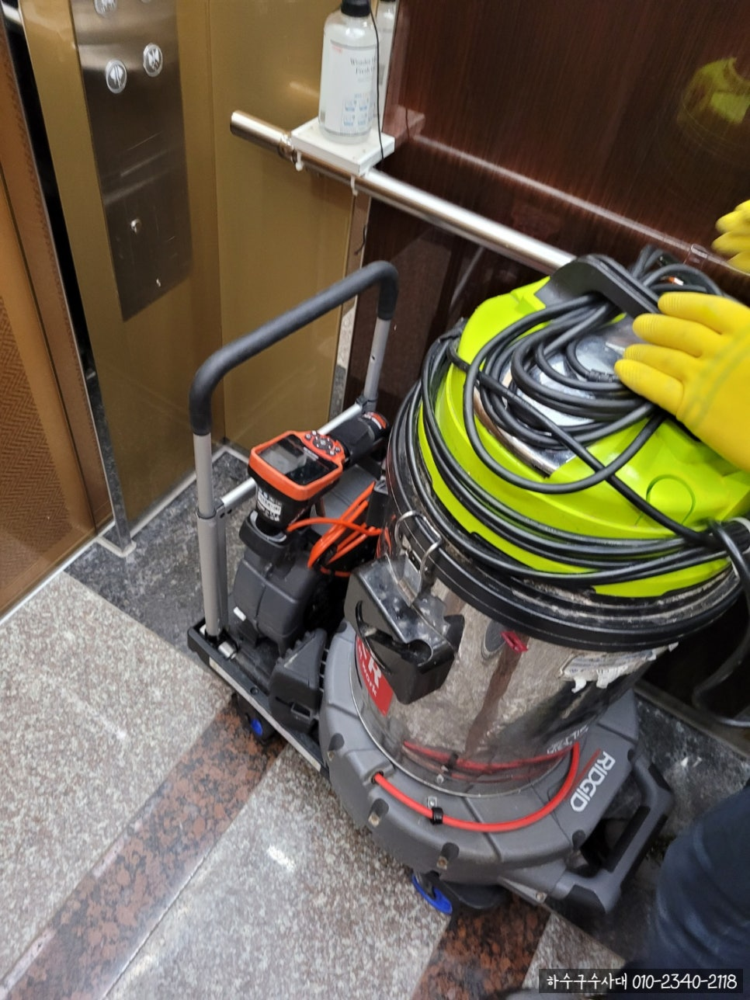
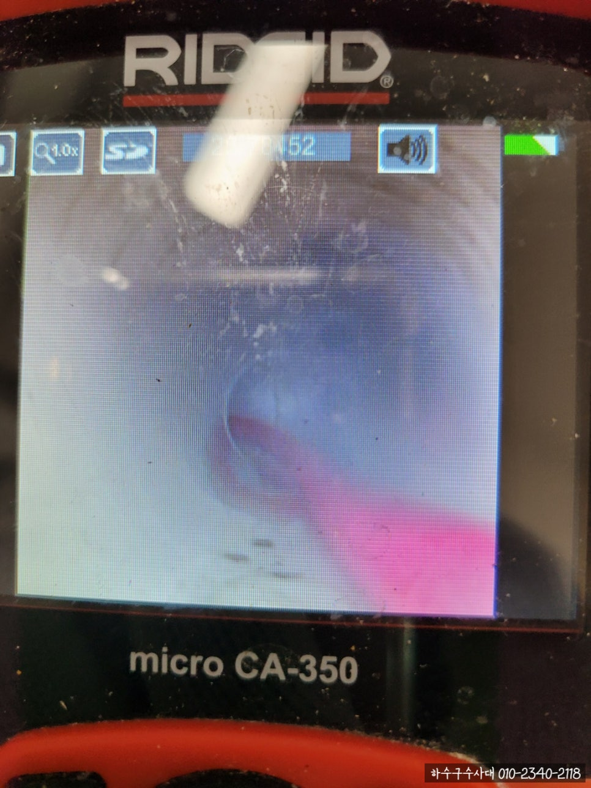
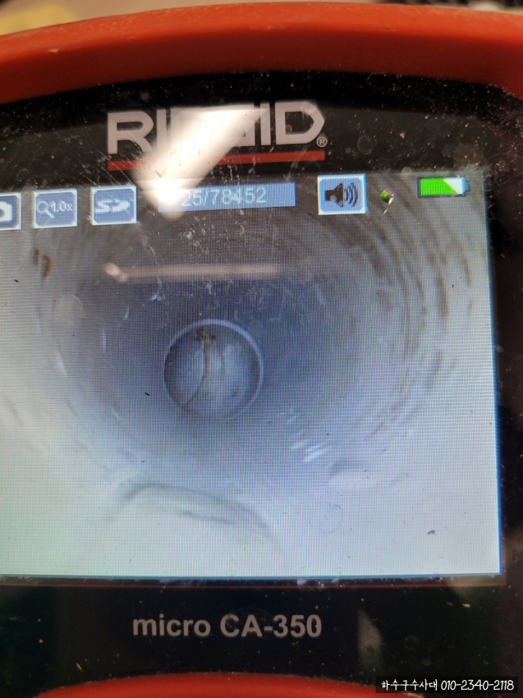
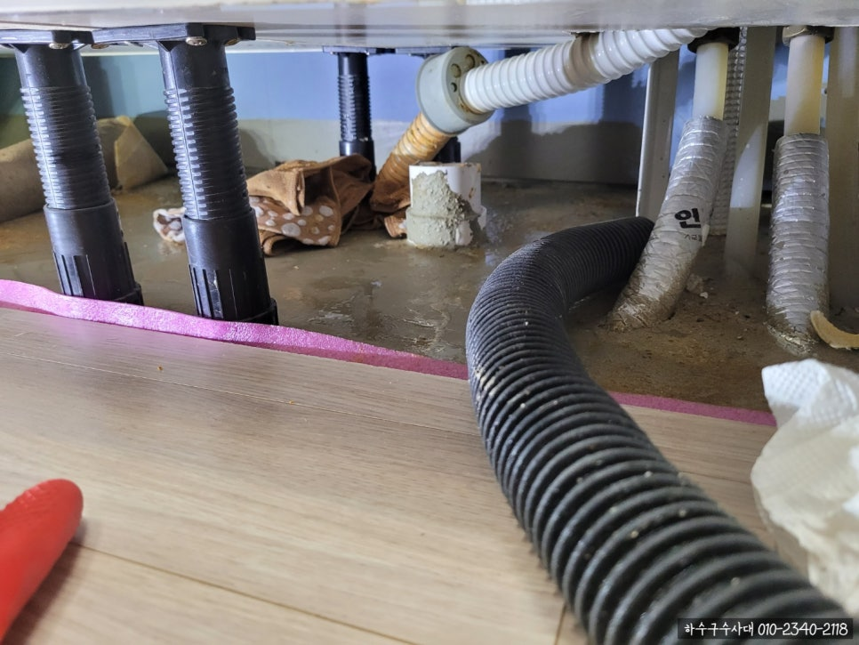
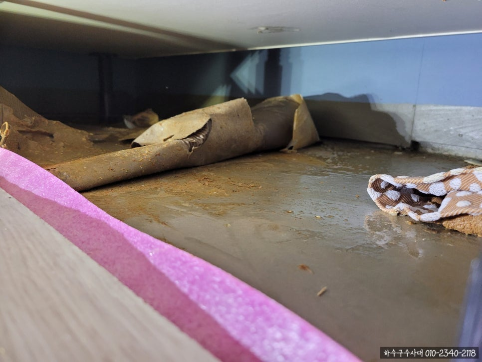
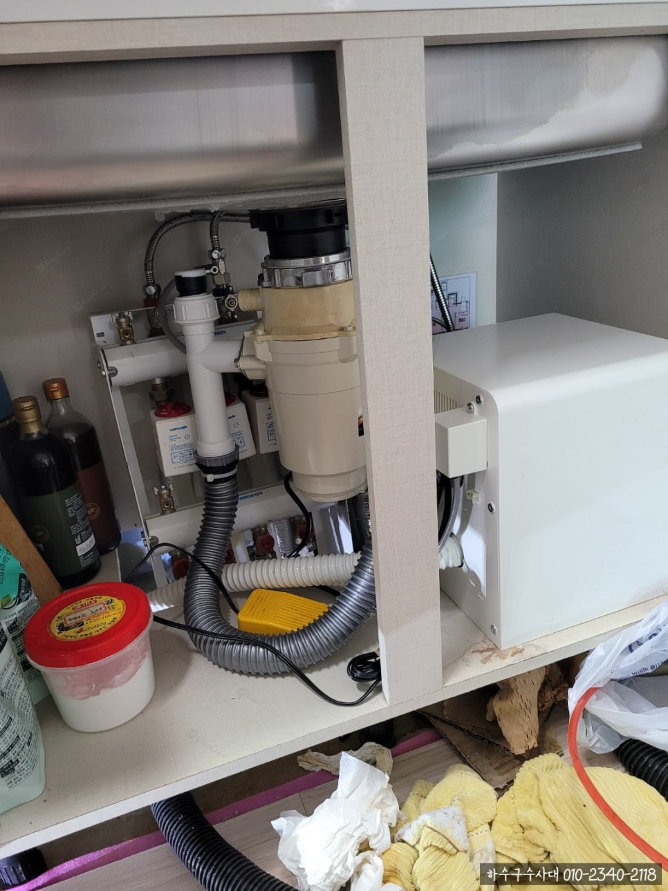
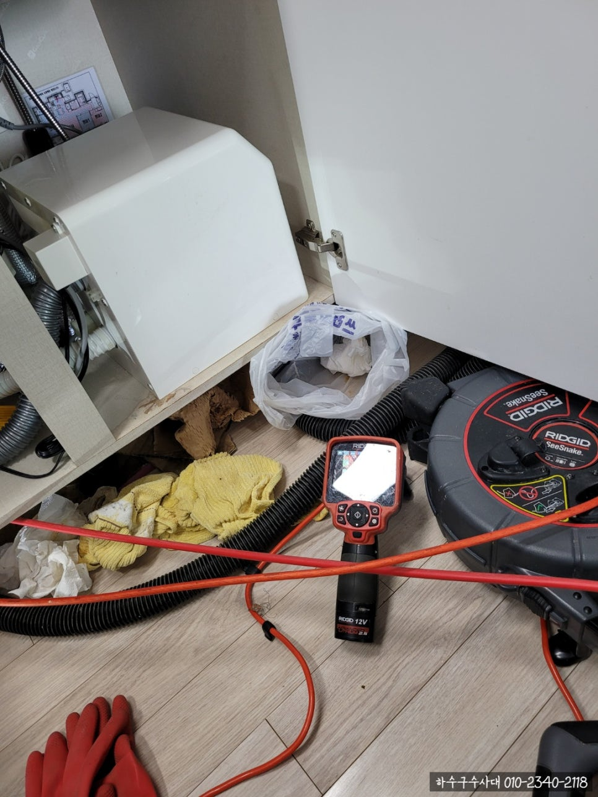

🏠 수원싱크대막힘 시원하게 해결했어요
수원 싱크대막힘 전문 시공 후기

📋 작업 개요
- 위치: 수원
- 서비스 유형: 싱크대막힘, 하수구막힘, 배관막힘, 배관청소, 고압세척
- 작업 일시: 2021. 9. 27. 21:08
- 업체명: 하수구수사대 (010-5615-2118)
🔍 문제 상황
안녕하세요.
수원싱크대막힘 해결하러 오늘도 출동한 하수구수사대 입니다.
다들 이번 추석연휴 잘보내셨나요??
연휴철에 대가족이 모이느라 싱크대에서 설거지도 많이하시고
아무래도 튀김같은 기름을 제대로 씻지 않으면
배관에 많이 남게 됩니다.
이번 수원싱크대막힘 현장 작업사례로
살펴보실까요
아파트 싱크대막힘 작업을 위해
저희가 가지고 있는
배관내시경장비와 배관세척장비를 들고 출동합니다.
먼저 배관청소를 진행한 후 작업사진을 보여드릴게요.
말끔히 제거되어 이물질이 없는거 보이시나요?
먼저 아파트 싱크대막힘은 정기적인 배관만 청소잘해주어도 악취는 예방가능하답니다.
아래에서 이번에 진행한 수원싱크대막힘 충격적인 배관상태를 보여드리고 비포에프터도 보여드릴게요.
배관쪽 아래만 봐도 너무 지저분한걸 보실수 있어요.
그래서 악취도 많이 나더라구요.

🔎 원인 분석
💡 전문가 진단: 정밀 진단 장비를 사용하여 슬러지의 고착 여부를 판명하고 타격/세척 작업을 실시했습니다.
배관 청소를 하지 않아도 배수구 내부를 확인하는 작업은
필수입니다.
저희 하수구수사대 직원들은
고객님과 신뢰도를 위해 기본 장비만으로도 해결이 된다면
꼭 말씀드리고 정직하게 작업을 합니다.
우선 싱크대 쪽에 악취가 심하게 나더라구요
냄새측정기를 사용하여서 어떤상태인지 체크를 진행했어요.
저희가 가지고 있는 냄새측정기는 한번에 4가지를 가지고 있기때문에
수치값을 정확하게 측정한답니다.
싱크대 하수관 앞에 가져다 놓으니
생각보다 높은 수치가 나왔습니다.
우선 배수구 아래쪽을 열심히 닦아주면서 작업을 진행했습니다.
스켈링 장비로 배관청소를 진행하다보면
이물질들이 떨어져서 제거되면서 배관이
마치 새것처럼 변하는 것을 볼수 있답니다.
그리 오래된 아파트는 아니었지만
평소 거름망을 제대로 사용하는 것 만으로도
예방을 하실수 있어요.

🔧 작업 과정
악취의 원인은 보통 싱크대막힘이나
노후된 배수구 때문이에요.
이번 수원싱크대막힘 문제를 해결하기 위해
배관내시경 장비를 이용하여
하수구 내 이물질이 있는지 체크해봤어요.
사진으로도 보이듯이 내부에
많은 음식물들이 빼곡하게 쌓여있는 것을 볼수있어요.
이런 문제를 해결하지 않으면 배관내 이물질이 부패되어
냄새가 올라온답니다.
이런상황을 해결하지 않으면 추후에 심각한 문제가 발생할수 있기때문에
빠른 조치를 해주시는게 좋아요.
아파트 싱크대막힘은 배관세척 장비를 사용해서 찌꺼기를 제거해주는 작업을 시작했어요.
배관안에 붙어있는 이물질의 양도 양이지만
오랜시간동안 쌓여와서 축적되어있었기 때문에
딱딱하게 굳어있는게 문제였습니다.
돌처럼 굳은 상태이기 때문에
일반 흡입장비로는 해결이 안되기때문에
배관세척 장비로 작업을 진행해야해요.
배관을 깨끗하게 청소해주는 장비 앞부분에
달려있는 체인이 빠르게 돌아가면서
딱딱하게 굳은 찌꺼기들을
부숴서 깨끗하게 청소해준답니다.
그다음 찌꺼기들이 하수관으로 흘러들어가서 쌓이지 않도록
흡입장비로 빨아들인후 통안에 넣어준답니다.
작업 소요시간은 1시간 정도면 충분하답니다.
최종적으로 배관상태가 어떻게 바뀌었는지
내시경카메라로 고객님께 다시한번 확인시켜드린답니다.
아래에서 비포에프터 작업후기 보여드릴게요.


✅ 작업 완료
보이시나요. 위의 사진만으로도 배관이 놀랍게
깨끗하게 변화된것이 보이시나요?ㅎㅎ
마지막으로 노후된 배관을 잘라 다시 새배수고로 교체하면 작업은 마무리입니다.
싱크대 배수구를 교체하는것만으로도
악취를 막을수 있답니다.
교체후 다시 측정해보니 수치값은 0으로 떨어져있습니다.
수원싱크대막힘 이번 현장도 성공적으로 작업 마무리한 후 철수하였답니다.




⚠️ 주방 싱크대 배관 막힘 예방 수칙
- ✅ 기름기가 묻은 식기나 프라이팬은 설거지 전 키친타올로 반드시 기름때를 닦아내세요.
- ✅ 주기적으로 싱크대 개수대에 뜨거운 물을 가득 받아 한 번에 내려 배관 내부 기름을 씻어내세요.
- ✅ 배수구 거름망을 미세한 필터로 사용하시고 음식물 찌꺼기가 틈으로 새어 들지 않게 관리하세요.
- ✅ 베이킹소다와 식초를 뜨거운 물과 함께 일주일에 한 번씩 부어주면 배관 살균과 막힘 예방에 좋습니다.
💡 핵심 정리
- 확실한 장비 작업(내시경 점검 및 샤프트 스케일링)으로 원인을 뿌리 뽑습니다.
- 작업 후 1년 이내에 동일한 부위 재발 시 100% 무상 A/S 서비스를 보장합니다.
- 서울 · 경기 · 인천 전 지역에 24시간 언제든 긴급 출동할 수 있도록 항시 대기 중입니다.
❓ 자주 묻는 질문 (FAQ)
🚨 수원 싱크대막힘 문제로 고민이신가요?
정확한 원인 진단과 확실한 시공으로 재발 없는 해결을 약속드립니다.
24시간 긴급 출동 | 서울 · 경기 · 인천 전지역 | 1년 내 재발 시 무상 A/S